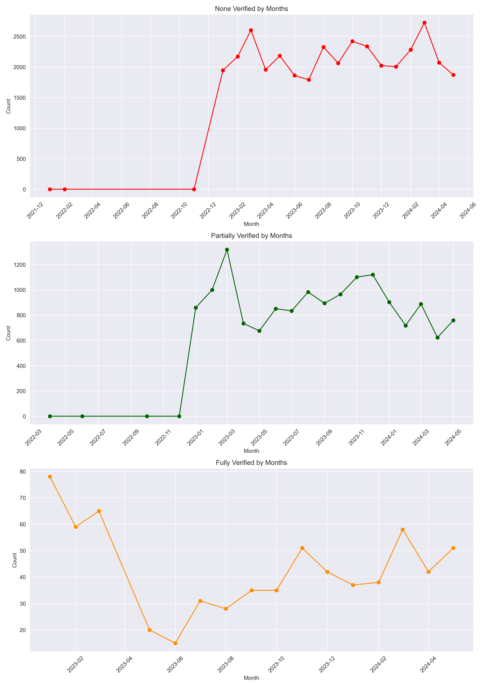
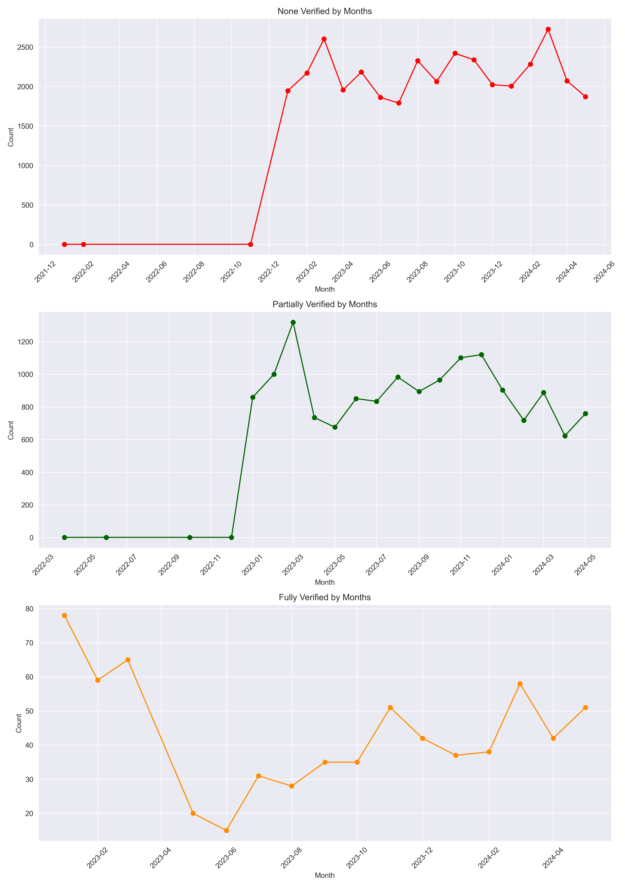
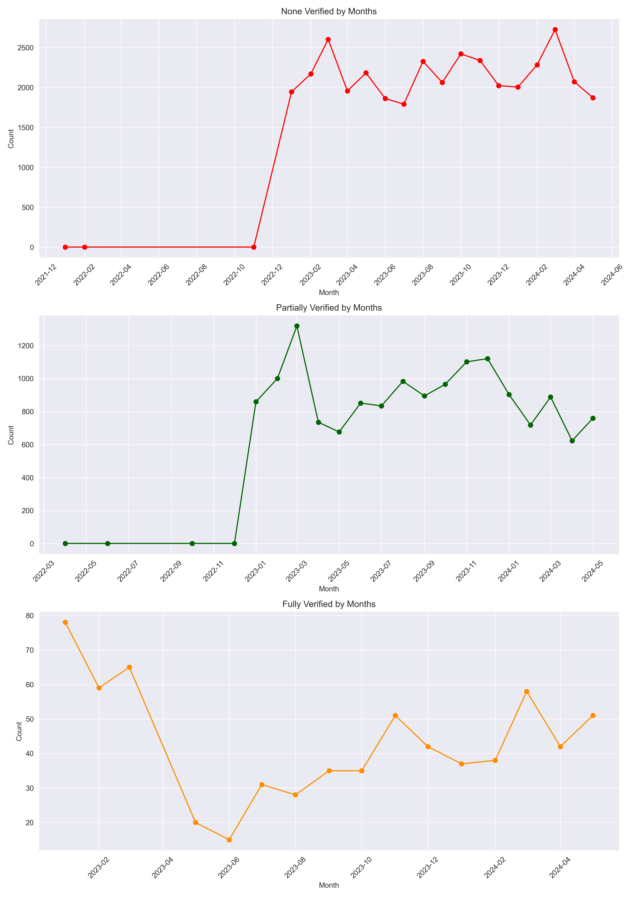

Project Visualizations
 

Welcome to my portfolio! This repository highlights my skills as a data analyst and showcases my key projects.
I am a Senior Data Operations Analyst working for Vast. My expertise includes SQL, Python, data visualization, and statistical analysis.
This project evaluates Verisk’s insurance verification accuracy by comparing database records with XML responses...
View Full Project Repository
